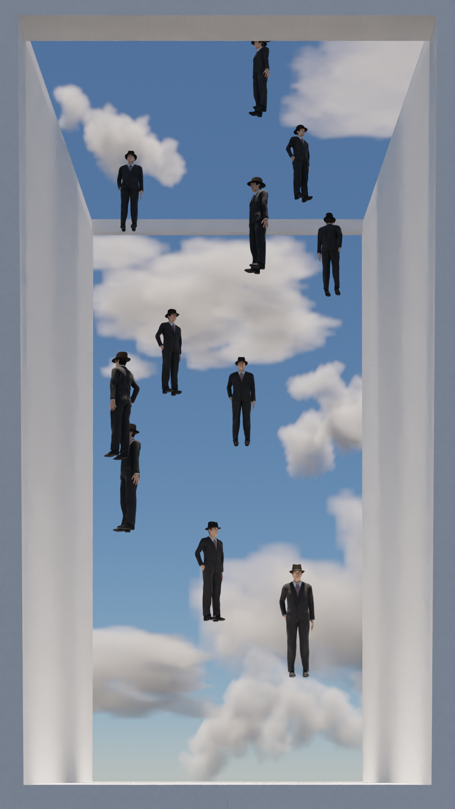
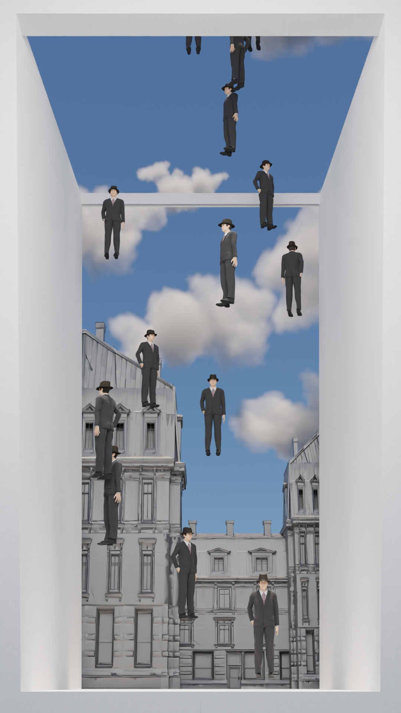
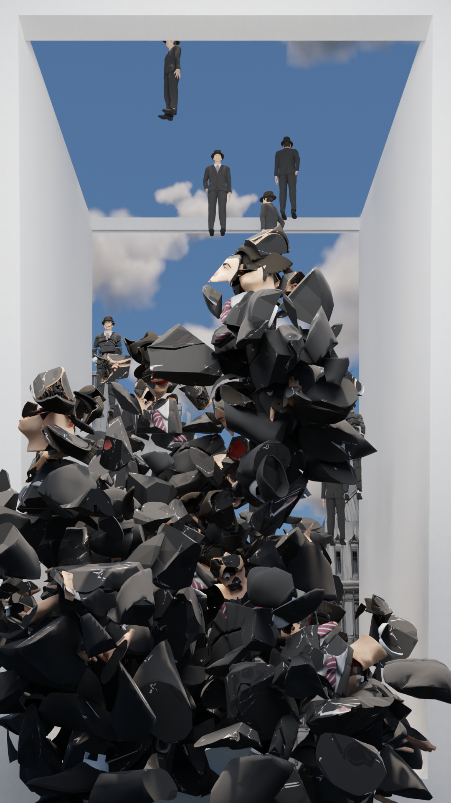
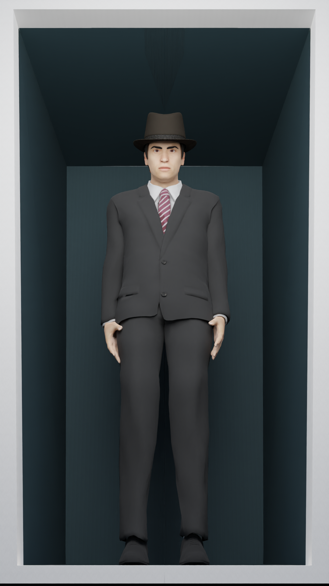
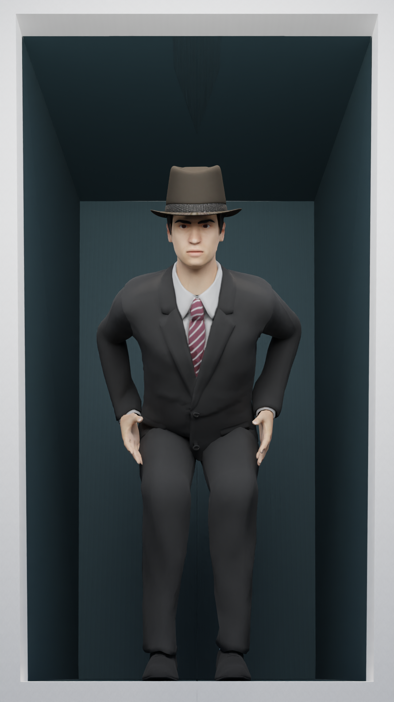
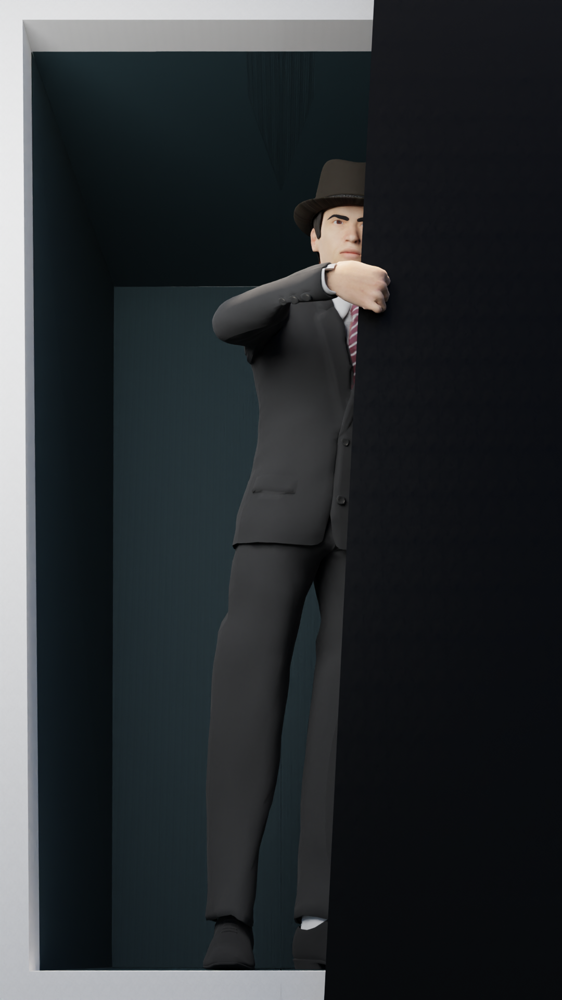

Concept
I drew inspiration from Golconda, a surrealist painting by René Magritte. Magritte’s work has always struck me as bizarre, even unsettling, yet strangely captivating. His paintings resist being pinned down to a single meaning, and their openness to interpretation has always stimulated my imagination. Among his works, Golconda left a particularly strong impression on me. The surreal image of men in black suits and bowler hats falling like rain from the sky creates a dreamlike, eerie atmosphere through its repetition and ambiguity.
At first glance, the painting appears orderly. The figures are evenly spaced, suspended midair, seemingly unaffected by gravity. There is no apparent chaos. And yet, this very uniformity introduces a strange sense of unease. Why are these men falling? Where did they begin their descent? How long, and from how high, have they been falling? While the houses in the background suggest that they are about to hit the ground, the point of origin remains unknown. It was while reflecting on these questions that I realized how closely this imagery mirrors the act of scrolling on a smartphone.


We often open our phones without clear intention, subconsciously launching social media apps and endlessly scrolling through short-form videos like Reels or Shorts. We are not necessarily searching for specific information or hoping to be moved. Instead, we consume stimulation with a simple upward flick of the finger. And at some point, like the falling figures in Golconda nearing the ground, we are suddenly struck by a moment of realization: “I just wasted so much time again.” A wave of regret and guilt crashes in, and yet, ironically, the finger begins to scroll again.
In this way, I reinterpreted the imagery of Golconda as a metaphor for our modern patterns of digital content consumption. The video I created is framed by a three-dimensional white cube, shaped like a smartphone screen. Inside this frame, identical figures repeatedly fall from the sky. Just before any of them reach the ground, the frame is “scrolled” again, and the same structure restarts with more falling figures. This looping structure visualizes the user’s habitual scroll, while also symbolizing the endless cycle of passive media consumption in contemporary life.
The video begins with a black screen. Slowly, a white frame expands from the center, mimicking the feel of a phone powering on. Within that frame, the fall begins. The identical figures descend without emotion or expression, always at the same speed. Each time they are about to reach the ground, the scene resets with another swipe. The repetition continues endlessly.
From beginning to end, these figures remain expressionless and emotionally flat. This lack of variation reflects the structure of content consumption today. As we scroll through Shorts and Reels, we may feel like we are seeing new material, but in reality, most of it blurs together into the same formula. After watching, we are often left with no lasting memory of what we’ve just seen.
This repetition builds a sense of exhaustion for the viewer. The fact that the figures never fully reach the ground, always interrupted by another scroll, mirrors how we often skip to the next video before finishing the last. The scene becomes a metaphor not only for how we consume content, but also for how our focus and emotions are repeatedly fragmented by the system itself.
Eventually, one figure finally hits the ground. Immediately after, the others begin to collapse in a chain reaction. This marks the moment of “reality check”, the crash of awareness. Thoughts of regret flood in, like a sharp blow to the head. Yet even after that jarring moment, the scroll resumes once again.


In an attempt to break this cycle, I introduced a change in the behavior of the final figure. After the scroll halts, he remains within the white frame and slowly turns to face the viewer, the person who just scrolled him into view. He frowns, then reaches out and pulls a cloth over the screen, as if to end the video himself. This scene is not meant to ridicule or judge the viewer; rather, it is a message to myself. I, too, am caught in this cycle. I, too, want to stop but often cannot. That final gesture represents my desire to choose, at least once, to consciously “turn it off.” But then, the video loops back to the beginning, and the whole sequence starts again.


This project is not a critique of others, but a self-portrait of all of us. We are all endlessly falling. Just like the men in Golconda, we may appear different on the surface, but we are caught in the same repetitive structures, slowly losing our sense of identity. Though Magritte’s painting was created in the 20th century, its surreal vision connects deeply with the visual culture of our digital era. Through this reinterpretation, I wanted to bridge the past and present, reconstructing a classical image through a modern lens to reflect on how we see ourselves today, and how that self may be gradually fading.